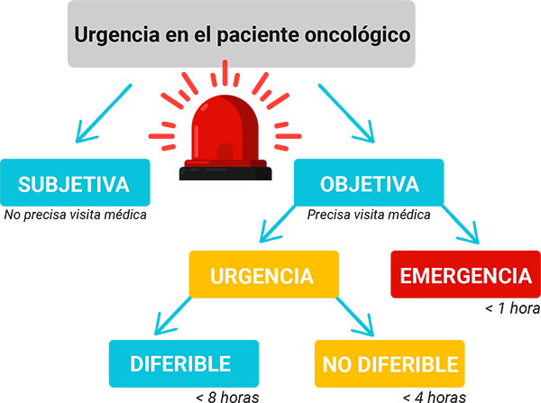

ICO 24h
MÓDULO 1 : Introducción a la atención telefónica urgente en el paciente onco-hematológico
La Organización Mundial de la Salud (O.M.S.) define urgencia sanitaria como "la aparición fortuita (imprevista o inesperada) en cualquier lugar o actividad, de un problema de salud de causa diversa y gravedad variable, que genera la conciencia de una necesidad inminente de atención por parte del sujeto que lo sufre o de su familia". Esta definición implica una gran heterogeneceidad y complejidad de los motivos de consulta que llevan a los pacientes a la consulta urgente.
En el caso de los pacientes oncológicos la complejidad de la urgencia se multiplica, consultan de urgencias por motivos relacionados con el tumor, con los tratamientos específicos utilizados o bien por descompensaciones de las comorbilidades que padecen.
No siempre es evidente si se trata de uno u otro tipo de problema y menos evidente es el lugar donde solucionarlo. A veces el problema urgente requiere la activación inmediata de un sistema de emergencias, y otras veces no.
